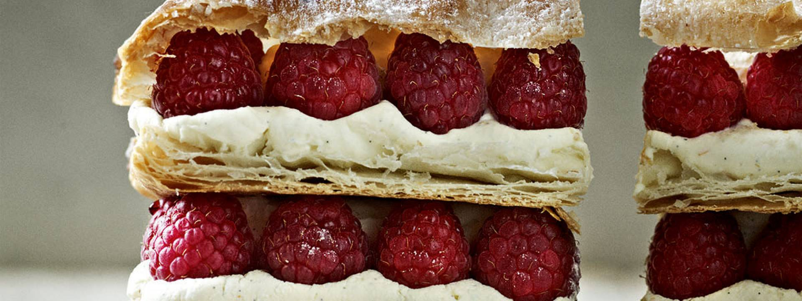

Raspberry Millefeuille

Description
Layers of cream, pastry and raspberry
Ingredients
- 320-375g ready-rolled all-butter puff pastry
- 3 tbsp icing sugar, plus extra to dust
- Seeds from 2 vanilla pods
- 600ml double cream
- Zest of 1 orange
- ½ tbsp orange-flavoured liqueur, e.g. Grand Marnier
- 200g fresh raspberries
Steps
- Preheat the oven to 220°C/Gas 7.
- Unroll the pastry and place on a non-stick baking tray. Dust generously with icing sugar and bake in the preheated oven for 8 minutes, then reduce the temperature to 200°C/Gas 6 and cook for a further 7–12 minutes until the pastry is golden and glazed. Remove and leave to cool slightly on a wire rack.
- Meanwhile, mix the vanilla seeds into the cream. Add the 3 tablespoons of sugar and whip the mixture until it forms soft peaks. (Don’t overbeat or it will separate.) Add the orange zest and liqueur and fold in using a spatula.
- Spoon the cream into a piping bag fitted with a plain nozzle, twisting slowly to move the cream to the pointed end. Chill until ready to use.
- When the pastry has cooled, slice it very gently into 3 equal-sized lengths with a bread knife.
- Assemble the millefeuille just before serving. Take the piping bag from the fridge, add a dot of cream to the serving plate to act as ‘glue’ and put a piece of pastry on top. Pipe a layer of cream over the pastry and add a border of raspberries around the outer edges. Pipe another layer of cream inside the raspberry border, then top with another layer of pastry and repeat the cream and raspberry stages. Finish with a top layer of pastry. Serve immediately, dusted with more icing sugar.